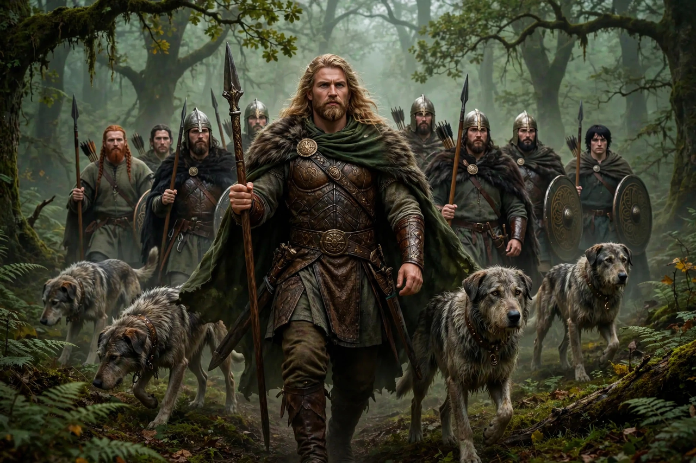

| Fenian Cycle | |
|---|---|
| Tradition | Irish (Celtic) mythology and folklore |
| Principal figures | Fionn mac Cumhaill, Oisín, Oscar, Caoilte, Diarmuid |
| Principal source | Acallam na Senórach (The Tales of the Elders), c. 1200 |
| Other names | Ossianic Cycle; Fianna Cycle |

The Fenian Cycle, also called the Fianna Cycle or Ossianic Cycle, is one of the four great cycles of Irish mythology: a body of prose and verse concerning the deeds of the hero Fionn mac Cumhaill and his warrior band, the Fianna. It is traditionally set in the Ireland of the 3rd century AD, in the reign of the High King Cormac mac Airt.
The Fianna were a band of landless, professional warriors — hunters, mercenaries and guardians of Ireland — who spent half the year in the service of the High King and half living off the land. Admission demanded feats of endurance, poetry and arms: a candidate had to defend himself in a pit against nine spearmen with only a shield and a hazel wand, run through a forest without breaking a twig or leaving a braid of his hair disturbed, and leap a branch as high as his forehead and stoop under one as low as his knee. The cycle's tone is correspondingly outdoor and elegiac: much of it is presented as the aged Oisín and Caoilte, last survivors of the Fianna, recounting the heroic past to a patient Saint Patrick.
Unusually among the cycles, Fenian material lived on in oral folk tradition in Ireland and Scotland into the modern era. In the 1760s James Macpherson's "Ossian" poems — purported translations of ancient Scottish epics by Fionn's son Oisín — became a European literary sensation and shaped Romanticism, despite controversy over their authenticity. The cycle also gave its name to the Fenian movement of the 19th century and the Irish Republican Brotherhood.